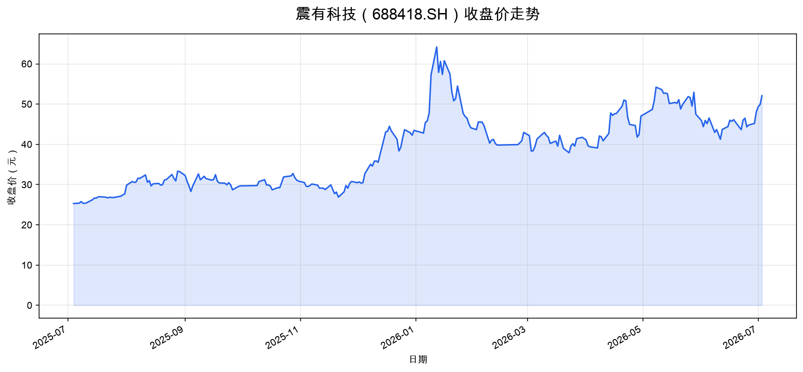

震有科技（688418.SH）— 卫星互联网量化分析
传统手工交易容易受情绪影响——贪婪时追高、恐惧时割肉。量化交易基于预设的数学模型和规则执行，策略信号触发后自动下单，杜绝人为情绪干扰，严格执行交易纪律。
人脑同时跟踪数十只股票已很吃力，量化系统可以同时监控数千只标的，综合价格、成交量、基本面指标、新闻情感、宏观经济因子等多维度数据，发现人眼难以察觉的规律。
手工交易依赖个人经验判断，难以验证策略的有效性。量化交易可以将策略放在历史数据上回测，用收益率、夏普比率、最大回撤等指标客观评估策略表现，避免"幸存者偏差"式的自我欺骗。
量化系统可以在毫秒级完成下单，捕捉手工交易无法企及的短线机会。对于高频策略，机器执行的效率和精度远超人工。即使对中低频策略，自动化执行也大幅降低了盯盘时间和操作成本。
量化系统可以 7×24 小时运行，无需休息。同时策略可以轻松从 1 万元扩展到 1 亿元规模，边际成本极低。手工交易者管理大资金时面临的冲击成本和心理压力，量化系统可通过算法交易平滑处理。
K 线起源于日本大米期货交易，是金融市场最通用的价格可视化工具。每一根 K 线记录一个时间单位（如 1 天）内的四个价格：开盘价（Open）、收盘价（Close）、最高价（High）、最低价（Low）。
多个 K 线组合形成价格形态（如头肩顶、锤子线等），被技术分析者用来预测价格走势。
基本面分析是从上市公司的内在价值出发，研究影响股票价格的根本因素，包括：
核心逻辑是"买股票就是买公司"——当市场价格低于公司内在价值时买入，高于时卖出。典型代表是价值投资（格雷厄姆、巴菲特）。
技术面分析不关注公司值多少钱，而是通过研究历史和当前的交易数据（价格、成交量）来预测未来走势。主要工具包括：
核心假设是"历史会重演"，市场参与者的行为模式会在相似的价格形态下重复出现。技术面在量化交易中广泛使用，因为其数据标准化、易建模。
使用 Tushare Pro API 获取震有科技（688418.SH）过去一年的每日交易数据，共 242 条记录，数据日期从 2025-07-04 至 2026-07-03。

| 日期 | 开盘 | 最高 | 最低 | 收盘 | 涨跌幅 | 成交量(手) |
|---|---|---|---|---|---|---|
| 2026-07-03 | 49.90 | 52.68 | 49.71 | 52.10 | +4.41% | 91255 |
| 2026-07-02 | 50.00 | 52.18 | 47.63 | 49.90 | +1.14% | 98317 |
| 2026-07-01 | 48.00 | 50.21 | 47.19 | 49.34 | +2.62% | 76994 |
| 2026-06-30 | 45.60 | 48.30 | 45.11 | 48.08 | +6.37% | 87987 |
| 2026-06-29 | 45.50 | 46.33 | 43.91 | 45.20 | +0.89% | 60930 |
| 2026-06-26 | 43.89 | 46.87 | 42.88 | 44.80 | +1.04% | 62846 |
| 2026-06-25 | 46.64 | 47.75 | 43.80 | 44.34 | -4.65% | 60517 |
| 2026-06-24 | 46.50 | 46.62 | 44.20 | 46.50 | +1.09% | 51871 |
| 2026-06-23 | 42.80 | 47.30 | 42.40 | 46.00 | +5.36% | 79485 |
| 2026-06-22 | 46.64 | 48.00 | 42.78 | 43.66 | -5.37% | 59467 |
data/688418_SH_daily.csv（包含 ts_code, trade_date, open, high, low, close, pre_close, change, pct_chg, vol, amount）reports/close_price.pngimport tushare as ts
from dotenv import load_dotenv
load_dotenv()
pro = ts.pro_api(os.getenv('TUSHARE_TOKEN'))
# 获取过去一年数据
df = pro.daily(ts_code='688418.SH',
start_date='20250704',
end_date='20260704')
df = df.sort_values('trade_date')
# 保存 CSV
df.to_csv('data/688418_SH_daily.csv', index=False, encoding='utf-8-sig')
# 画收盘价曲线图
plt.plot(df['trade_date'], df['close'])
plt.savefig('reports/close_price.png')
数据来源：Tushare Pro | 生成时间：2026-07-04